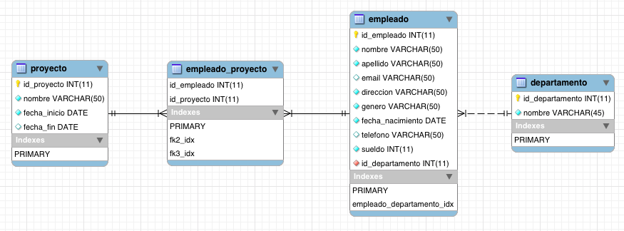

Lenguaje SQL Volver
SQL (Structured Query Language) es el lenguaje estándar ANSI/ISO de definición, manipulación y control de bases de datos relacionales. Es un lenguaje declarativo: sólo hay que indicar qué se quiere hacer.
Comandos DDL - Data Definition Language
| CREATE | Utilizado para crear nuevas tablas, campos e índices |
| DROP | Empleado para eliminar tablas e índices |
| ALTER | Utilizado para modificar las tablas agregando campos o cambiando la definición de los campos |
--Crea una base de datos
CREATE DATABASE empresaDB;--Crea tabla empleados con varias columnas
CREATE TABLE `empresaDB`.`empleado` (
`id_empleado` INT NOT NULL,
`apellido` VARCHAR(45),
`nombre` VARCHAR(45),
`telefono` INT,
`direccion` VARCHAR(45),
`fecha_nacimiento` DATE,
`observaciones` VARCHAR(45),
`sueldo` INT,
PRIMARY KEY (`id_empleado`) );--Modifica empleados y le agrega un campo
ALTER TABLE `empresaDB`.`empleado`
ADD COLUMN `id_departamento` INT NOT NULL;--Elimina la tabla empleados
DROP TABLE `empresaDB`.`empleado`;--Crea tabla departamento
CREATE TABLE `empresaDB`.`departamento` (
`id_departamento` INT NOT NULL,
`nombre` VARCHAR(45) NULL,
PRIMARY KEY (`id_departamento`) );--Modifica empleado y le agrega un INDEX
ALTER TABLE `empresaDB`.`empleado`
ADD INDEX `empleado_departamento_idx` (`id_departamento` ASC);--Modifica empleado y le agrega una constraint del tipo clave foránea FK
ALTER TABLE `empresaDB`.`empleado`
ADD CONSTRAINT `empleado_departamento`
FOREIGN KEY (`id_departamento`)
REFERENCES `empresaDB`.`departamento` (`id_departamento`)
ON DELETE CASCADE
ON UPDATE CASCADE;Comandos DML - Data Manipulation Language
| SELECT | Utilizado para consultar registros de la base de datos que satisfagan un criterio determinado |
| INSERT | Utilizado para cargar lotes de datos en la base de datos en una única operación. |
| UPDATE | Utilizado para modificar los valores de los campos y registros especificados |
| DELETE | Utilizado para eliminar registros de una tabla de una base de datos |
--Todas las columnas de todos los registros de empleado
SELECT * from empleado;--Nombre y apellido de todos los registros de empleado
SELECT nombre,apellido from empleado;--Inserto un nuevo departamento
INSERT INTO `empresaDB`.`departamento` (`id_departamento`, `nombre`)
VALUES ('9000', 'Marketing');--Inserto varios nuevos departamentos
INSERT INTO `empresaDB`.`departamento` (`id_departamento`, `nombre`)
VALUES ('9001', 'Ventas')
,('9002', 'Administración')
,('9003', 'Reparto')
,('9004', 'Internet');--Le pongo el mismo sueldo a todos los empleados
UPDATE `empresaDB`.`empleado` SET `sueldo`=500000;--Borro todos los empleados
DELETE FROM empleado;Cláusulas
| FROM | Utilizada para especificar la tabla de la cual se van a seleccionar los registros |
| WHERE | Utilizada para especificar las condiciones que deben reunir los registros que se van a seleccionar |
| GROUP BY | Utilizada para separar los registros seleccionados en grupos específicos |
| HAVING | Utilizada para expresar la condición que debe satisfacer cada grupo |
| ORDER BY | Utilizada para ordenar los registros seleccionados de acuerdo con un orden específico |
--Traer nombre y sueldo de los empledos de Internet
SELECT nombre,apellido from empleado WHERE `id_departamento` = 9004;--Aplico nuevo sueldo sólo al área de marketing
UPDATE `empresaDB`.`empleado` SET `sueldo`=700000 WHERE `id_departamento` = 9000;--Todos los departamentos, ordenados por nombre de forma ascendente
SELECT * FROM empresaDB.departamento ORDER BY nombre ASC;Operadores lógicos
| AND | Es el “y” lógico. Evalúa dos condiciones y devuelve un valor de verdad sólo si ambas son ciertas. |
| OR | Es el “o” lógico. Evalúa dos condiciones y devuelve un valor de verdad si alguna de las dos es cierta. |
| NOT | Negación lógica. Devuelve el valor contrario de la expresión. |
--Todos los empleados que ganen 4000 del departamento de Internet
SELECT * FROM empresaDB.empleado
WHERE sueldo=4000 AND id_departamento = 9000--Todos los empleados que ganen 4000 y no sean del departamento de Internet
SELECT * FROM empresaDB.empleado
WHERE sueldo=4000 AND NOT id_departamento = 9000Operadores de comparación
| < | Menor que |
| > | Mayor que |
| <> | Distinto de |
| <= | Menor ó Igual que |
| >= | Mayor ó Igual que |
| BETWEEN | Utilizado para especificar un intervalo de valores. |
| LIKE | Utilizado en la comparación de un modelo |
| IN | Utilizado para especificar registros de una base de datos. |
--Todos los empleados cuyo apellido comience con P
SELECT * FROM empresaDB.empleado
WHERE nombre LIKE 'P%'--Todos los empleados que hayan nacido después de (o durante) 1980
SELECT * FROM empresaDB.empleado
WHERE YEAR(fecha_nacimiento) >= 1980--Todos los empleados que ganen entre 1000 y 4000
SELECT * FROM empresaDB.empleado
WHERE sueldo BETWEEN 1000 AND 4000Funciones de agregación
| AVG | Utilizada para calcular el promedio de los valores de un campo determinado |
| COUNT | Utilizada para devolver el número de registros de la selección |
| SUM | Utilizada para devolver la suma de todos los valores de un campo determinado |
| MAX | Utilizada para devolver el valor más alto de un campo especificado |
| MIN | Utilizada para devolver el valor más bajo de un campo especificado |
--Salario promedio
SELECT AVG(sueldo) as promedio FROM empresaDB.empleado;--Cantidad total de empleados
SELECT COUNT(1) as cantidad FROM empresaDB.empleado;--Cantidad total de empleados agrupados por departamento
SELECT id_departamento, COUNT(1) as cantidad FROM empresaDB.empleado
GROUP BY id_departamento;--Cantidad total de empleados agrupados por departamento, para los departamentos que tengan más de 5 empleados
SELECT id_departamento, COUNT(1) as cantidad FROM empresaDB.empleado
GROUP BY id_departamento
HAVING COUNT(1)>5;Actividad I:
Implementar en una base de datos el siguiente SCRIPT SQL
Diagrama de entidad-relación
- 4 tabla relacionadas.
- 3 entidades.
- 1 tabla de relación.
- 1000 empleados.
- 6 departamentos.
- 5 proyectos.
Realizar las siguientes operaciones sobre la base de datos de ejemplo:
- Crearse a ustedes como empleados, del departamento de Internet.
- Buscarse a ustedes mismo, por apellido.
- Pensar entre todos un nuevo proyecto y agregarlo (uno solo debe hacerlo).
- Asociarse a ese proyecto.
Join
Posibilidad de combinar dos tablas en una consulta, unidas por una relación. Dadas dos tablas: empleado y departamento, ver los siguientes ejemplos.
 Representación gráfica de los tipos de join.
Representación gráfica de los tipos de join.
Join (o inner Join)
Es el más común. Retorna los registros que están en las dos tablas. Es decir, mostrará los empleados que estén relacionados a algún departamento.
| empleado.apellido | departamento.nombre |
|---|---|
| Pérez | Sistemas |
| Tagle | Sistemas |
| Soto | Administración |
| ... | ... |
--join o inner-join
SELECT empleado.apellido, departamento.nombre
FROM empleado
JOIN departamento on empleado.id_departamento = departamento.id_departamento;Left join
Retorna los registros sólo de la tabla de la "izquierda" aunque no tengan relación. Serían todos los empleados incluso si no están en ningún departamento.
| empleado.apellido | departamento.nombre |
|---|---|
| Pérez | Sistemas |
| Tagle | Sistemas |
| Soto | Administración |
| Stefan | (NULL) |
| ... | ... |
--left-join
SELECT empleado.apellido, departamento.nombre
FROM empleado
LEFT JOIN departamento on empleado.id_departamento = departamento.id_departamento;Left join
Retorna los registros sólo de la tabla de la "derecha" aunque no tengan relación. Se listarían todos los empleados que tengan departamento, además de los departamentos que no tengan empleados.
| empleado.apellido | departamento.nombre |
|---|---|
| Pérez | Sistemas |
| Tagle | Sistemas |
| Soto | Administración |
| (NULL) | Logística |
| ... | ... |
--right-join
SELECT empleado.apellido, departamento.nombre
FROM empleado
RIGHT JOIN departamento on empleado.id_departamento = departamento.id_departamento;Outer join (o full join)
Retorna el total de registros de las dos tablas, sin importar que tengan o no relación. En MySQL no está implementado, pero si podemos generarlo uniendo los resultados de un left y un right joins.
| empleado.apellido | departamento.nombre |
|---|---|
| Pérez | Sistemas |
| Tagle | Sistemas |
| Soto | Administración |
| Stefan | (NULL) |
| (NULL) | Logística |
| ... | ... |
SELECT empleado.apellido, departamento.nombre
FROM empleado
LEFT JOIN departamento on empleado.id_departamento = departamento.id_departamento
UNION
SELECT empleado.apellido, departamento.nombre
FROM empleado
RIGHT JOIN departamento on empleado.id_departamento = departamento.id_departamento;
Actividad II:
Misma base de datos que la anterior.
Diagrama de entidad-relación
Realizar las siguientes operaciones sobre la base de datos de ejemplo:
- Nombres de todos los proyectos con su fecha de comienzo.
- Todos los campos de poyecto, pero sólo de los proyectos que ya terminaron.
- Salario promedio de los empleados del nuevo proyecto.
- Código departamento y cantidad de empleados por departamento.
- Nombre departamento y cantidad de empleados por departamento.
- Nombre, apellido, dirección y sueldo de empleados que ganen más de dos millones, ordenados por sueldo de forma descendente.
- Id de proyecto y cantidad de empleados.
- Id de proyecto y cantidad de empleados pero solo proyectos que tengan más de 20 empleados.
- Id de proyecto y sueldo sumado de todos sus empleados.
- Nombre de proyecto y sueldo sumado de todos sus empleados, ordenado por sueldo total descendente.
--1 SELECT nombre, fecha_inicio FROM proyecto--2 SELECT * FROM proyecto WHERE fecha_fin IS NOT NULL--3 SELECT AVG(sueldo) FROM empleado WHERE id_departamento = (ID)--4 SELECT id_departamento,COUNT(1) as cantidad FROM empleado GROUP BY id_departamento--5 SELECT departamento.nombre,COUNT(1) as cantidad FROM empleado JOIN departamento ON empleado.id_departamento = departamento.id_departamento GROUP BY empleado.id_departamento--6 SELECT empleado.nombre, empleado.apellido, empleado.direccion, empleado.sueldo FROM empleado WHERE empleado.sueldo > 2000000 ORDER BY empleado.sueldo DESC--7 SELECT id_proyecto,count(1) as cantidad FROM empleado_proyecto GROUP BY id_proyecto--8 SELECT id_proyecto,count(1) as cantidad FROM empleado_proyecto GROUP BY id_proyecto HAVING count(1)>20--9 SELECT id_proyecto, SUM(empleado.sueldo) as total FROM empleado_proyecto JOIN empleado ON empleado.id_empleado = empleado_proyecto.id_empleado GROUP BY id_proyecto--10 SELECT proyecto.nombre, SUM(empleado.sueldo) as total FROM empleado_proyecto JOIN empleado ON empleado.id_empleado = empleado_proyecto.id_empleado JOIN proyecto ON proyecto.id_proyecto = empleado_proyecto.id_proyecto GROUP BY empleado_proyecto.id_proyecto